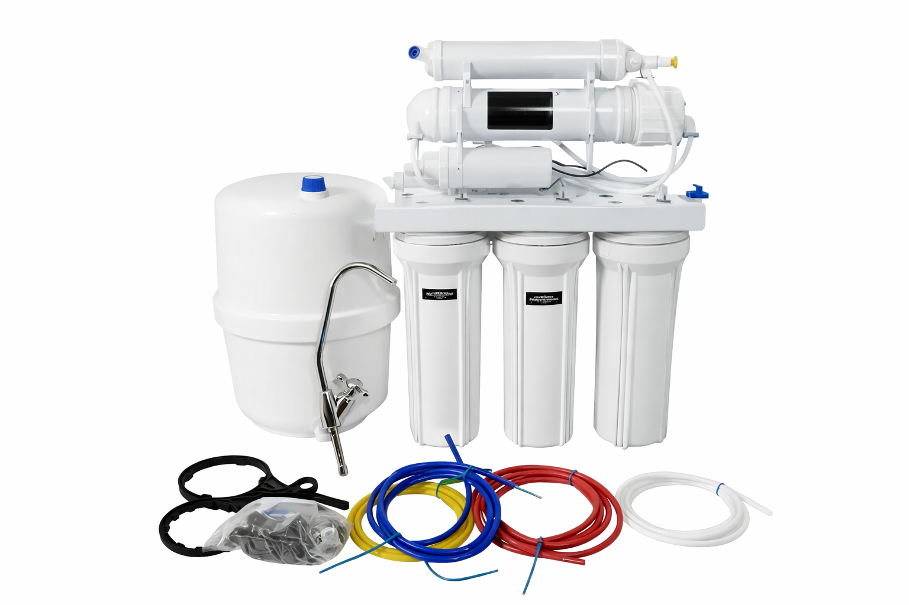
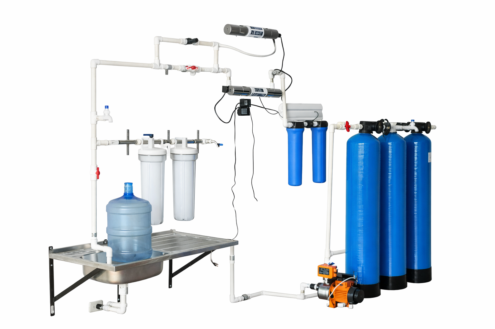

Agua de Alta Calidad
Equipos con tecnologías modernas que mejoran la calidad del agua para consumo diario.
En AquaPure Guatemala ofrecemos soluciones integrales en purificación de agua mediante equipos de alta calidad, instalación profesional y mantenimiento especializado, brindando confianza en cada gota.

Combinamos tecnología, experiencia y atención personalizada para ofrecer soluciones de purificación de agua adaptadas a cada necesidad.
Equipos con tecnologías modernas que mejoran la calidad del agua para consumo diario.
Personal capacitado para garantizar una instalación segura y el máximo rendimiento del equipo.
Acompañamiento antes, durante y después de la compra, brindando confianza en cada proyecto.
Analizamos tus necesidades para recomendar la mejor solución para tu hogar, comercio o industria.

En AquaPure Guatemala trabajamos para ofrecer soluciones confiables de purificación de agua para hogares, comercios e industrias. Nuestro compromiso es brindar equipos de alta calidad, instalación profesional y acompañamiento permanente a nuestros clientes.
Creemos que el acceso a agua de calidad mejora la salud y el bienestar, por eso ofrecemos asesoría personalizada para encontrar el sistema ideal para cada necesidad.
Te acompañamos desde la asesoría inicial hasta el mantenimiento de tus equipos, garantizando un servicio confiable y de calidad.
Instalamos equipos de purificación para hogares, comercios e industrias siguiendo altos estándares de calidad.
Servicio preventivo y correctivo para mantener el máximo rendimiento y prolongar la vida útil de cada equipo.
Evaluamos las características del agua para recomendar la solución de purificación más adecuada.
Contamos con equipos, accesorios y repuestos para aplicaciones residenciales, comerciales e industriales.
Descubre nuestra línea de equipos diseñados para ofrecer agua más limpia, segura y de excelente calidad para hogares, comercios e industrias.

Ideal para hogares y oficinas que buscan agua de máxima pureza.
Solicitar Información
Desinfecta agua, frutas, verduras y superficies mediante ozono.
Solicitar Información
Equipo compacto para una desinfección rápida y eficiente.
Solicitar Información
Elimina bacterias y microorganismos mediante luz ultravioleta.
Solicitar Información
Soluciones de alto rendimiento para empresas e industrias.
Solicitar Información
Equipos profesionales para obtener agua potable de excelente calidad.
Solicitar InformaciónTrabajamos cada día para ofrecer soluciones confiables, innovadoras y de alta calidad que mejoren la vida de nuestros clientes.
Brindar soluciones profesionales para la purificación de agua mediante equipos de alta calidad, instalación especializada y mantenimiento, ofreciendo un servicio cercano y confiable.
Ser una empresa referente en Guatemala por la calidad de nuestros productos, la innovación tecnológica y la satisfacción de nuestros clientes.
Completa el formulario y recibirás atención personalizada por medio de WhatsApp.
Selecciona una pregunta para ver la respuesta.
Nuestro equipo te asesora para recomendar el sistema más adecuado según el consumo de agua y las necesidades de tu familia.
Sí. Contamos con personal capacitado para instalar todos nuestros equipos.
Sí. Realizamos mantenimiento preventivo, correctivo y cambio de filtros.
Sí. Tenemos soluciones para hogares, comercios, hoteles e industrias.